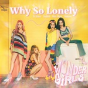

Why So Lonely
2016-07-05
원더걸스, 오는 7월 5일 싱글 'Why So Lonely'로 전격 컴백!
데뷔 10년 만의 첫 자작 타이틀곡 'Why So Lonely' 확고한 뮤지션 입지 입증, 박진영 아닌 첫 자작 타이틀 곡
음원 역주행, 신인상, 7만장에 육박하는 앨범 판매량, 걸그룹 데뷔곡 기준 역대 최고 Youtube 조회수까지. 작년 하반기를 그야말로 뜨겁게 달궜던 TWICE가 드디어 4월 25일 미니 2집 [PAGE TWO]를 발매하며, 이들의 두번째 이야기를 시작한다. 신인으로서는 유례없는 성적을 일궈냈던 만큼 이번 미니 2집에 대한 팬들의 기대에 보답하기 위해 쉴 틈 없는 일정 속에서도 최고의 앨범을 만들기 위한 최선의 준비를 거듭해왔다.
2집 [PAGE TWO]는 TWICE만의 고유한 매력을 한층 더 강화하면서도 더 많은 색깔을 담기 위한 시도를 놓치지 않았다. 전작 ‘OOH-AHH하게’로 자신 있게 선보였던 TWICE만의 유니크 스타일 ‘Color Pop’ 을 기반으로 더 세련된 구성과 다채로운 사운드를 담고 있는 타이틀 곡 “CHEER UP”을 시작으로, 멤버 채영의 랩 메이킹과 함께 18년 만에 리메이크되는 “소중한 사랑”, TWICE가 가진 활기찬 개성과 똑닮은 다이나믹 사운드의 “Touchdown” 청량감과 부드러움을 동시에 잡아낸 ‘툭하면 톡’ 힙합, 펑키, 그루브를 하나로 모아, 말 그대로 ‘신나기 이를 데 없는’ ‘어서 우리 세계로 들어오라’는 자신감 넘치는 가사의 “WooHoo” TWICE만의 독특한 정서로 이별의 슬픔을 표현한 “Headphone 써”까지. 국내외 정상급 작곡가/ 작사가 및 엔지니어 팀과 함께 한 이번 미니 2집 [PAGE TWO]는 ‘눈으로 한번, 귀로 한번’ 두 번 감동을 주겠다는 TWICE의 각오를 넘어서는, 너무나 매력적인 음악적 스펙트럼을 자랑한다. 여기에 하나 더, SIXTEEN 때 많은 화제를 낳았던 “I’m gonna be a star”를 완곡으로 CD에만 수록, 팬들의 기대감을 증폭시키고 있다.
“예쁜 애 옆 예쁜 애 옆 예쁜 애” 라는 수식어가 회자될 정도로 비주얼 매력이 앞서는 TWICE이지만, 팬들 앞에 ‘Group TWICE’로서 더 발전된 모습을 보여드리기 위해 끊임없이 노력해 온 음악적 성장 또한 엿볼 수 있는 이번 앨범은 TWICE의 한층 더 성장한 ‘무궁무진한’ 매력을 보여주기에 조금도 부족함이 없겠다. 나아가 세번째, 네번째 앞으로 펼쳐질 많은 이야기들을 너무나 궁금하게 만들. 새로운 시작점으로서의 즐거움과 의미로 가득 차있다. 이번 앨범을 통해 무엇보다도 팬들에게 한발 더 가까이 다가가고 싶다는 순수한 포부를 밝히고 있는 TWICE. 평균 연령 18세지만 이 당차기 이를 데 없는 9명의 성장을 지켜보고 응원하는 것은 우리 모두가 각자 가지고 있는 꿈을 이뤄 나가는 것과 크게 다르지 않을 것만 같다. 그래서 TWICE를 마주할 때 설레는 마음을 더 감출 수가 없는게 아닐까. 이제 그 설레고 즐겁기 이를 데 없는 마치 놀이동산 같고, 마법 같은 두 번째 이야기가 펼쳐진다. 우리의 눈 앞에 한번, 그리고 우리의 귀에 한번.
-

Why So L...
2016-07-05 -
REBOOT
2015-08-03 -
Wonder P...
2012-06-03